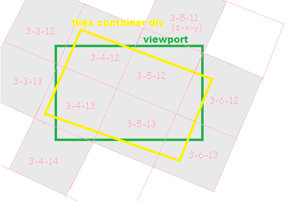

This article is rewrite of my previous blog Map of web mercator tiles where I used web-mercator-tiles module to create the OSM tiles map. I have done two improvements in the new module map-the-tiles. First it can be used with other projections also, though default is spherical mercator. Second is very exciting, rotated view its quite easy to rotate the map now with this module. We’ll explore in detail the module in this blog.
A lot of processing is required to create raster map tiles at back end. Yes there are many steps with many software to generate OSM tiles with road data. But on the other hand consuming these map tiles is very easy at browser end. We’ll see in this blog how easy it is to display map of required area with raster map tiles in particular for spherical mercator commonly known as web mercator projection.
Here is the map with spherical mercator projected image tiles using npm module map-the-tiles. You can change the center, zoom and rotation of this map. In the current example map can not be dragged or zoomed, the idea is to show the calculation of map tiles at proper place.
Let’s understand the approach for this rotated map. So the requirement is to display a map for given location, zoom level and rotation. To display the rotated map first I rotate the map tiles container div with help of CSS transform property to desired rotation (see the image below).  Then its required to find the tiles that intersect with viewport. To find the intersected tiles ‘map-the-tiles’ module is used by passing center, zoom and rotation. The output is set of tiles whereas each tile object in the set has tile numbers x,y,z and top, left CSS position with respect to tile container div. This set contains only tiles that intersect with viewport. Now its quite easy to display the map tile images as html image tag in tile container div from any map provider (OSM, MapBox and yes google, bing also).
We’ll see now the code in detail. First the HTML component of this example:
<div id="mapArea">
<div id="viewPort">
<div id="tilesContainer"></div>
</div>
</div>
<span> Center (long, lat) </span><input type="text" id="center" value="-71.147, 42.472" style="width:150px"/>
<span> Zoom </span> <input type="number" id="zoom" value="9" style="width:50px" />
<span> Rotation (deg) </span><input type="text" id="rotation" style="width:50px;" value="30"/>
<input id="zoomTo" type="button" value="Zoom To" />
<script type="text/javascript" src="./js/build.js"></script>
The main JavaScript code for this map is in main.js file that is part of this repo. So here goes the code step by step.
1 var Tiler = require('map-the-tiles'),
2 SphericalMercator = require('sphericalmercator'),
3 baseURL = 'http://tile.openstreetmap.org',
5 tilesContainerDiv, size, merc, tiler;
First we require the npm modules. map-the-tiles module to get the tiles for given map center, zoom and rotation(in degree, clockwise positive). sphericalmercator is used to transform geographic coordinates to spherical/web mercator projection. As OSM tiles url pattern is http://tile.openstreetmap.org/{z}/{X}/{Y}.png so we defined the baseURL at line 3.
Next we calculate the tiles container div size.
6 // get map window size
7 tilesContainerDiv = document.getElementById('tilesContainer');
8 size = {
9 height: parseInt(tilesContainerDiv.clientHeight),
10 width: parseInt(tilesContainerDiv.clientWidth)
11 };
Now we create global instance of map-the-tiles as tiler and merc instance of sphericalmercator that is projection transformer. To change the map view I created a button and assigned function zoomTo. And on page load we call our zoomTo function that is the main function to load the tiles according to the map view.
12 // instance of 'map-the-tiles'
13 tiler = new Tiler(size);
14 // projection tranformer instace
15 merc = new SphericalMercator({size:256});
16 // add event listenre to 'zoomTo' button
17 document.getElementById('zoomTo').addEventListener('click', zoomTo);
18 // call zoomTo funcion on page load
19 zoomTo();
zoomTo function:
21 function zoomTo() {
22 var center = document.getElementById('center').value.split(','),
23 zoom = parseInt(document.getElementById('zoom').value),
24 rotation = parseFloat(document.getElementById('rotation').value),
25 mercCenter, tiles;
26 // calculate map parameters in mercator projection
27 mercCenter = merc.forward([parseFloat(center[0]),parseFloat(center[1])]);
28
29 // get map tiles list for our map extent
30 tiles = tiler.getTiles(mercCenter, zoom,rotation);
31 tilesContainerDiv.style.transform = 'rotate('+(rotation)+'deg)';
As we discussed in the approach maps center, zoom level and rotation are required to get the tile set that intersects with viewport, we pass these parameters in getTiles API (line 30) of tiler i.e. map-the-tiles module instance. As center at the user interface is in geographic coordinates we need to convert it to spherical mercator projection (line 27). Thanks to CSS transform any element can be rotated very easily, at line 31 we rotate the tiles container div as per the rotation value in degree. Now we need to fetch the tiles and append to tiles container at appropriate position. Here is example of tile object:
{
"x":1237,
"y":1512,
"z":12,
"top":-120,
"left":-28
}
top and left are with respect to tiles container div. Its quite easy now to append each map image tile as img tag in tilesConatainerDiv
32 // append map tile images to the tiles container div
33 tilesContainerDiv.innerHTML = "";
34 tiles.forEach(function(t) {
35 var img = document.createElement('img');
36 img.src = baseURL + '/'+ t.z + '/' + t.x + '/' + t.y + '.png';
37 img.setAttribute('style', 'left:'+ t.left + 'px;top:'+t.top+'px;');
38 img.setAttribute('class','tile');
39 tilesContainerDiv.appendChild(img);
40 });
41 }
And we are done with our rotated OSM map. Please feel free to discuss about this or any improvement required in the module map-the-tiles.
Note: Each article in this blog is an individual project. Here is the source code for this article map.